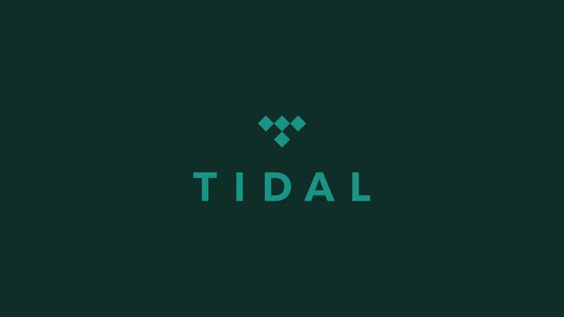
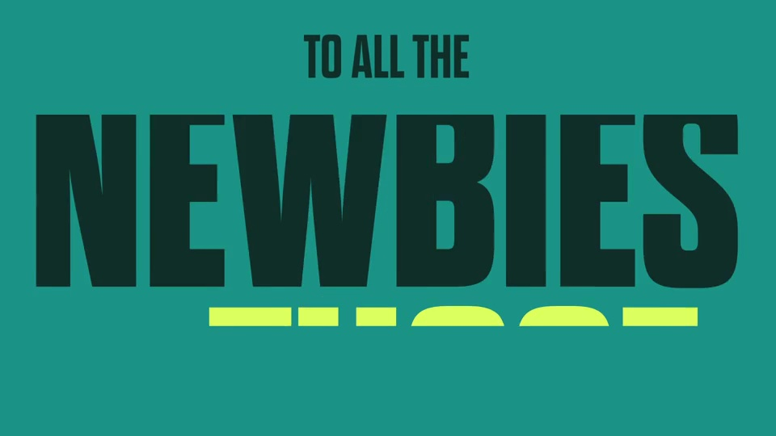
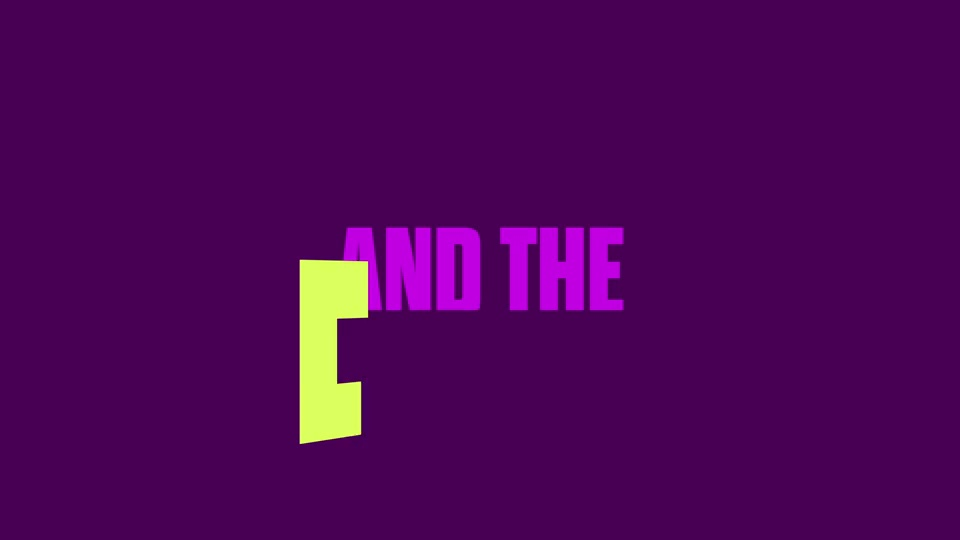
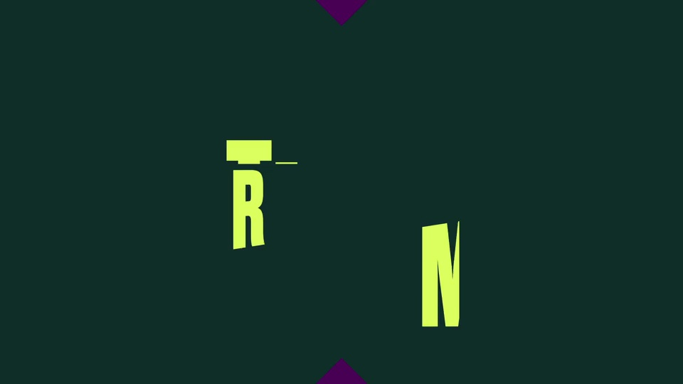

TIDAL / V390
TIDAL｜文字主视觉 15 秒版
在十五秒内保留致意、立场、音乐、创作者与听众五个重音；每次只读一组词。
构图与编排 可播放 · 可替换内容
整体编排规则示例
查看 HTML 源码
<!doctype html><html lang="zh-CN"><meta charset="utf-8"><meta name="viewport" content="width=device-width,initial-scale=1"><title>TIDAL｜文字主视觉 15 秒版 · sequence</title><style>html,body{margin:0;width:100%;height:100%;overflow:hidden;background:#10362f}canvas{display:block;width:100%;height:100%;object-fit:contain}</style><body data-mode="sequence"><canvas width="1000" height="600"></canvas><script src="data.js"></script><script src="common.js"></script><script src="scene.js"></script><script src="bridge.js"></script></body></html>画面元素菱形窄体大字关键词对角遮罩品牌标
MOTION LANGUAGE
动作与构图
局部动作 · 构图规则
01
短词占满，长句退后
主词使用极粗窄体，尽量一至两行；连接词缩小放在上下或侧边。文字可在入场时裁切，但落定的关键词要完整可读。
02
菱形是换色的转场孔
菱形是换色的转场孔规则示例
查看 HTML 源码
<!doctype html><html lang="zh-CN"><meta charset="utf-8"><meta name="viewport" content="width=device-width,initial-scale=1"><title>TIDAL｜文字主视觉 15 秒版 · sequence</title><style>html,body{margin:0;width:100%;height:100%;overflow:hidden;background:#10362f}canvas{display:block;width:100%;height:100%;object-fit:contain}</style><body data-mode="clip" data-start="4.2" data-end="8.2"><canvas width="1000" height="600"></canvas><script src="data.js"></script><script src="common.js"></script><script src="scene.js"></script><script src="bridge.js"></script></body></html>菱形从中心扩张覆盖画面，或四角向内合拢。用青绿／深绿和亮紫／深紫交替分组，柠檬黄突出情绪重词。
03
句子接力而非逐页字幕
把前一关键词的放大或移出当作下一句的入场空间。ARTISTS 与 FANS 使用相似形变形成呼应，收尾回到稳定的三行品牌句。
04
换文案先重新安排重音
可替换品牌和社群称谓，保留呼喊式短句与强弱词层级。缩短长版本时优先删除完整例举组，留下核心承诺，不把每句都加倍加速。
SEQUENCE
段落与节奏
点击段落，定位到上方编排示意。




画面参考 · 离散静帧
KEEP THE RELATIONSHIPS
制作其他主题
- 替换品牌、受众群与宣言；按词长重新排字。
制作约束
菱形 / 窄体大字 / 关键词 / 对角遮罩 / 品牌标
- 主词使用极粗窄体，尽量一至两行；连接词缩小放在上下或侧边。文字可在入场时裁切，但落定的关键词要完整可读。
- 菱形从中心扩张覆盖画面，或四角向内合拢。用青绿／深绿和亮紫／深紫交替分组，柠檬黄突出情绪重词。
- 把前一关键词的放大或移出当作下一句的入场空间。ARTISTS 与 FANS 使用相似形变形成呼应，收尾回到稳定的三行品牌句。
- 可替换品牌和社群称谓，保留呼喊式短句与强弱词层级。缩短长版本时优先删除完整例举组，留下核心承诺，不把每句都加倍加速。